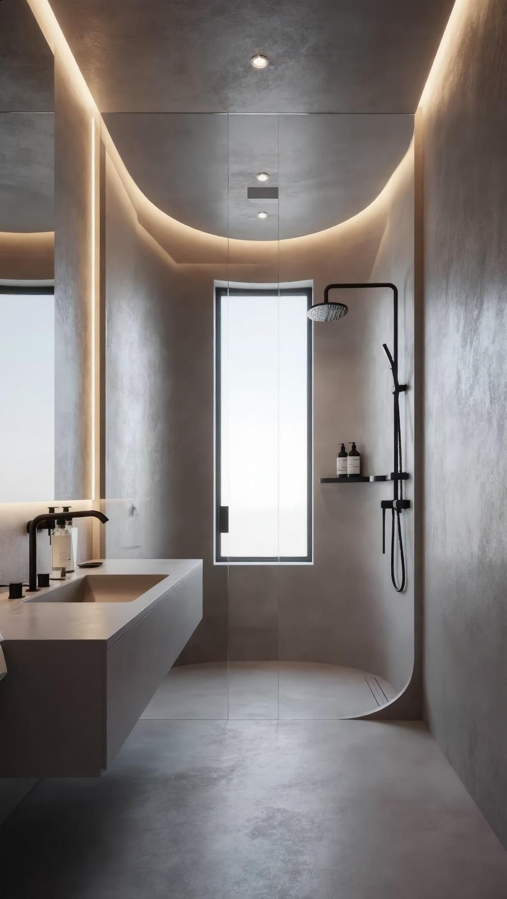

BTP · France & Belgique
25 ans de béton ciré
et d'expertise BTP
Ben&Bat couvre l'ensemble des corps de métier du bâtiment. Spécialistes du béton ciré premium depuis 25 ans, artisanat d'excellence accessible à tous les budgets, du petit réaménagement à la rénovation complète.
